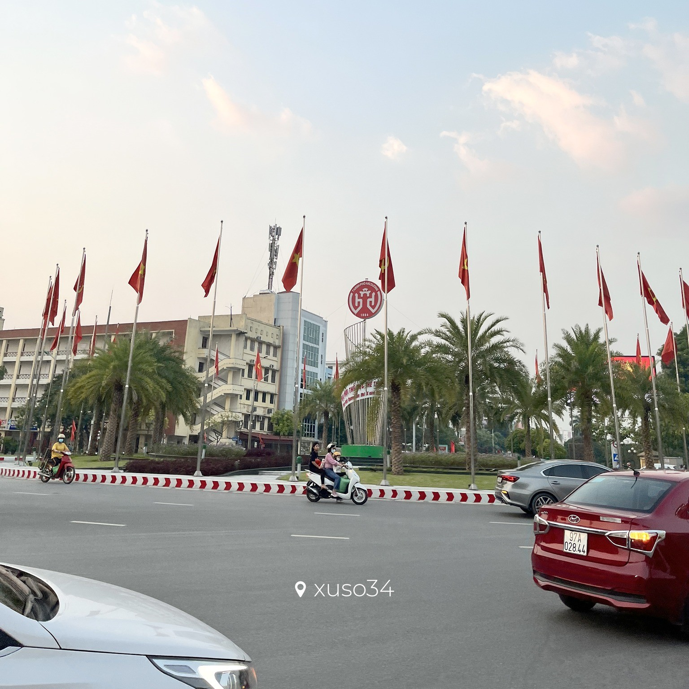
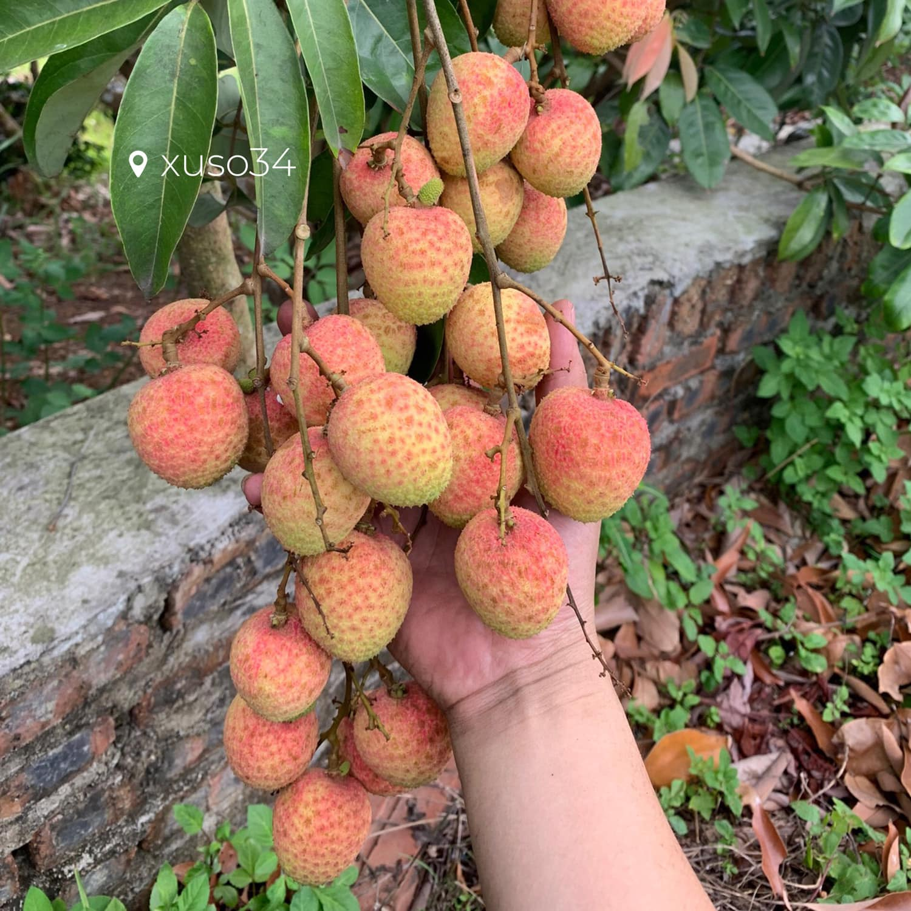
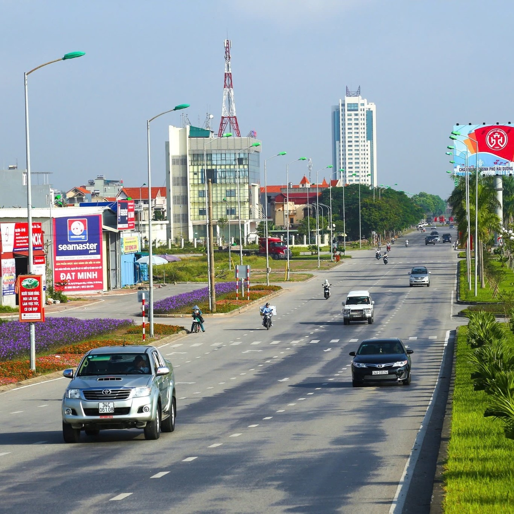
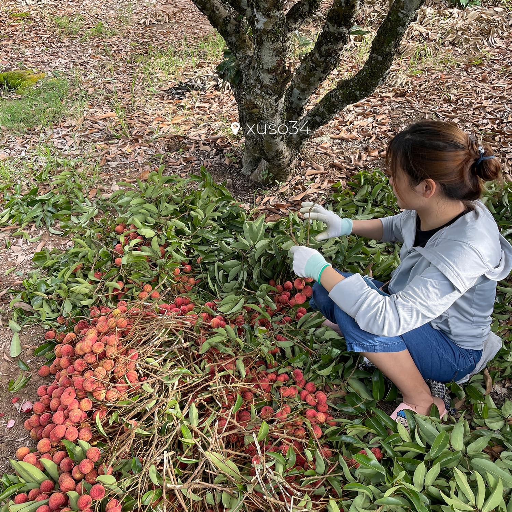

Home
Blog
Contact
Blog
1. Văn hóa và lịch sử:

-
Xứ Sở 34 có nhiều di tích lịch sử và văn hóa, phản ánh truyền thống lâu
đời của người dân nơi đây.
-
Các lễ hội truyền thống diễn ra thường xuyên, thu hút đông đảo du khách.
2. Ẩm thực:

-
Nơi đây nổi tiếng với các món ăn đặc sản như bánh đậu xanh, gà Hải
Dương, và nhiều món ăn dân dã khác.
-
Các sản phẩm nông nghiệp, như chè xanh và rau sạch, cũng rất được ưa
chuộng.
3. Cảnh quan thiên nhiên:

-
Các cánh đồng xanh mướt, dòng sông uốn lượn và những khu rừng nguyên
sinh tạo nên bức tranh thiên nhiên tuyệt đẹp.
-
Khí hậu ôn hòa, thích hợp cho việc phát triển nông nghiệp và du lịch.
4. Du lịch:

-
Xứ Sở 34 ngày càng thu hút du khách nhờ vào những tour du lịch sinh
thái, trải nghiệm văn hóa và khám phá ẩm thực.
-
Các điểm tham quan nổi bật như đền chùa, khu di tích lịch sử và các làng
nghề truyền thống.